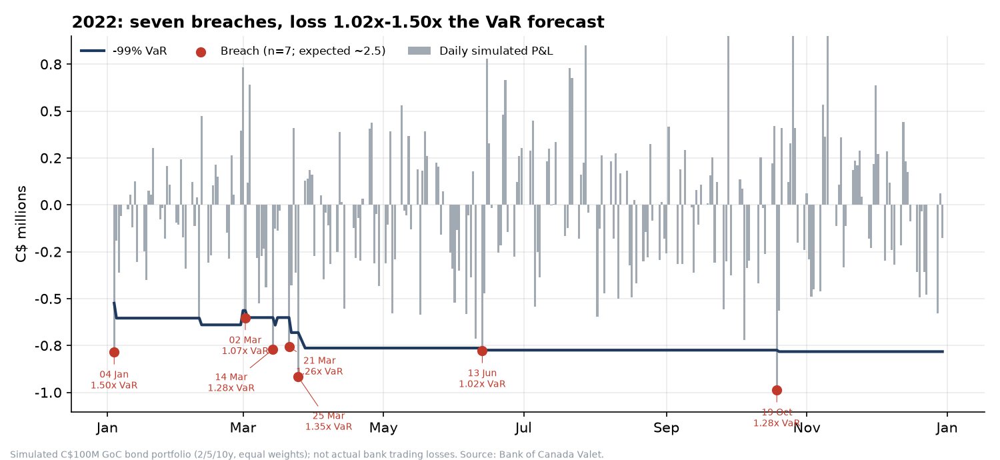

Did a 99% historical VaR underestimate Canadian government bond losses in 2022?
Canadian Fixed-Income Risk Backtesting · Data: Bank of Canada Valet API (GoC benchmark yields, 2 Jan 2019 – 30 Oct 2026) · All losses below are simulated on a hypothetical C$100M portfolio, not actual bank trading losses.
Conclusion: modestly yes, with limited statistical strength. In 2022 the model was breached on 7 of 248 days (2.8%) against the 1% (about 2.5 days) it promises. The Kupiec test gives p = 0.018: the breach rate is rejected at the 5% level but not at 1%. In every other tested year pooled, the model was breached 16 of 1,454 days (1.10%, p = 0.71), which is consistent with a correct model. Breach losses averaged 1.25× the VaR forecast (range 1.02×–1.50×); the worst simulated day was a C$988k loss on 19 Oct 2022 against a VaR of C$775k.
Results
| Period | Days | Breaches | Expected | Breach rate | Kupiec p | Avg VaR (C$) | Worst loss (C$) | Avg breach / VaR |
|---|
| 2022 | 248 | 7 | 2.5 | 2.82% | 0.018 | 736,128 | 987,894 | 1.25× |
| Other years (2020–21, 2023–26) | 1,454 | 16 | 14.5 | 1.10% | 0.705 | 644,480 | 933,408 | 1.22× |
| All tested days | 1,702 | 23 | 17.0 | 1.35% | 0.167 | 657,834 | 987,894 | 1.23× |

Why it happened
- VaR looks backward. The 4 Jan 2022 forecast (C$525k) was built from calm 2021 data, when daily simulated P&L volatility was C$204k. In 2022 it was C$363k (+78%).
- VaR then climbed 49% to C$783k by December. The realised 99th-percentile 2022 loss (C$783k) ended only 6% above the 2022 average VaR (C$736k): the miss was timing, not a wildly wrong level. 4 of the 7 breaches fell between 2 and 25 March.
- The loss was a steady one-way grind rather than isolated shocks: yields rose 311bp (2y), 216bp (5y) and 188bp (10y) over 2022. Fully revalued, the portfolio lost C$10.6M (10.6%); the duration-convexity P&L sums to C$10.8M.
How much weight to put on this
- One year, 7 events. Kupiec has low power; a single year’s p = 0.018 is not strong evidence. Seven yearly tests were run, so one p < 0.05 appears by chance about 30% of the time. Indeed 2024 (0 breaches) also rejects, in the opposite direction (p = 0.025).
- Christoffersen independence p = 0.56: no formal evidence of clustering within 2022.
- Robust to window choice: a 500-day window also gives 7 breaches in 2022 (2.8%). At 97.5% confidence 2022 breaches 5.6% of days vs 2.5% elsewhere.
Methodology
- Portfolio: C$100M, one-third each in 2-, 5- and 10-year GoC benchmark bonds, reset to equal weights daily. Each tranche is a semi-annual par bond (coupon = yield); modified duration and convexity are computed from the previous day’s yield (portfolio duration 4.8–5.6 years).
- Daily P&L = −D·Δy + ½·C·Δy² per tranche. VaR: 1% empirical quantile (linear interpolation) of the previous 250 P&Ls, so day t’s own P&L never enters its own VaR. Breach: loss > VaR. First VaR is 3 Jan 2020, so 2019 is warm-up only.
- Checks: duration vs closed form and finite differences; approximation vs full repricing (within 0.2% on a 10bp daily move); VaR and all 23 breaches re-derived with an independent loop; 9 automated tests pass.
Limitations
- Simulated, price-only P&L on constant-maturity par bonds: no coupon carry, roll-down, funding, credit spread, convexity of real holdings, or actual positions. A real desk’s results would differ.
- BoC yields are rounded to 0.01% and benchmark bonds roll over time, adding small noise. Only 1-day, parallel-and-twist rate risk is modelled; 250 observations leave just 2–3 tail points for a 99% quantile.
Implications
- Plain historical VaR with a 1-year window reacts to a volatility regime change with a lag; in a fast tightening cycle it can understate risk for the first weeks to months. Mitigations: volatility-weighted (e.g. EWMA/filtered) historical simulation, a stressed-period VaR floor, and routine backtesting with the traffic-light/Kupiec framework.
- Stress testing complements VaR: a repeat of 2022 (+188bp to +311bp) costs about C$10.6M on this portfolio, roughly 14× the average 2022 one-day VaR.
Reproduce: python src/run_all.py. Code, SQL, tests and Excel dashboard in the repository README. Kupiec (1995) POF test; Christoffersen (1998) independence test.